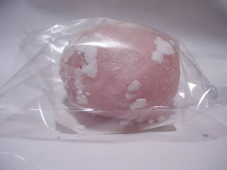

三英堂の梅大福
更新日 : 2009/02/08

梅大福ってあるんですね。一畑百貨店松江店で買いました。
大福の中には沢山の白餡と、ちょっと小さめの種を取った甘い梅が入ってました。
白餡が多いので和菓子らしい味ですね。甘く味を付けた梅が、ちょっと「さくらんぼ」みたいで面白い味でした。こうゆう梅の食べ方もあるんですね。
島根県松江市浜乃木1-1-53
更新日 : 2009/02/08

梅大福ってあるんですね。一畑百貨店松江店で買いました。
大福の中には沢山の白餡と、ちょっと小さめの種を取った甘い梅が入ってました。
白餡が多いので和菓子らしい味ですね。甘く味を付けた梅が、ちょっと「さくらんぼ」みたいで面白い味でした。こうゆう梅の食べ方もあるんですね。